Sugeng Rawuh ing Kitha Budaya
Di sini, waktu bergerak lebih lambat — dan setiap sudut menyimpan cerita.
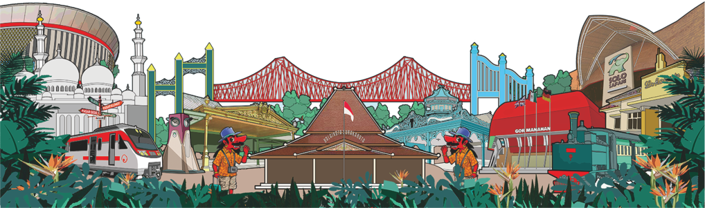
Ilustrasi © Pemerintah Daerah Kota Surakarta
Warisan yang Hidup
Tiga destinasi. Tiga karakter. Tiga cara berbeda untuk memahami mengapa Solo disebut kota yang tak pernah kehilangan jiwanya. Dari pendopo yang megah, kubah pasar yang berderit di pagi buta, hingga lorong kampung yang berbau lilin batik — semuanya menunggu untuk diceritakan.
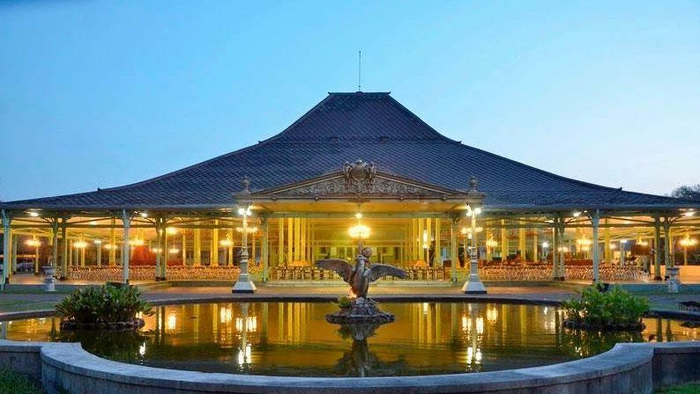
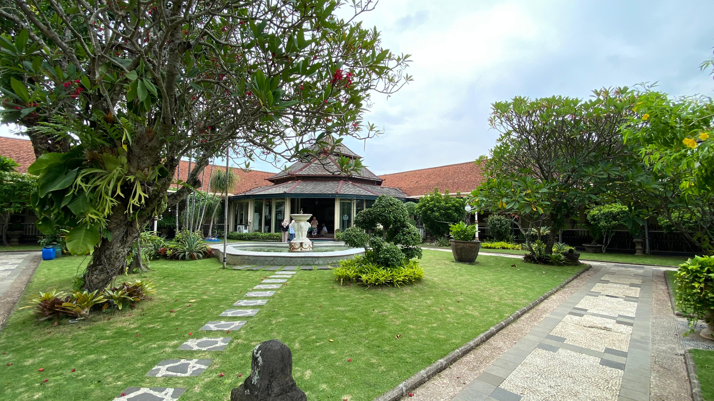
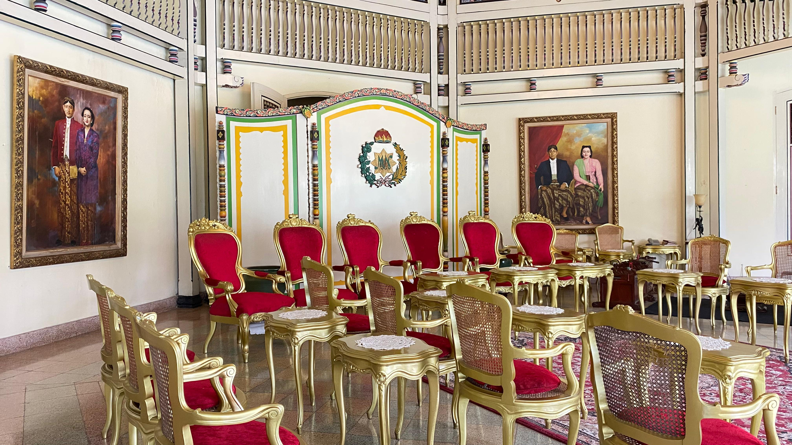
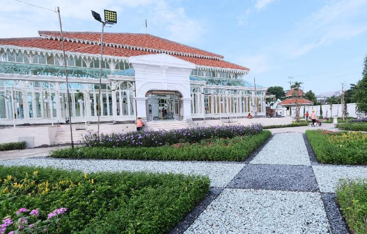
01 — Istana Budaya
"Masuk ke Mangkunegaran bukan sekadar mengunjungi bangunan tua — ini tentang merasakan napas Jawa yang masih berdenyut di antara pilar-pilarnya."
Istana ini lahir dari perlawanan. Raden Mas Said, seorang pangeran muda yang menolak tunduk, mengangkat senjata selama bertahun-tahun melawan kekuasaan Kasunanan. Bukan karena dendam, tapi karena keyakinan bahwa ada cara lain untuk menjadi Jawa yang bermartabat. Dunia menyebutnya Pangeran Sambernyawa, karena ke mana pun ia pergi, kematian mengikuti musuh-musuhnya.
Perjuangan itu akhirnya berakhir di meja perundingan Perjanjian Salatiga, pada 1757. Raden Mas Said tidak kalah. Ia mendapat tanah, gelar, dan hak untuk mendirikan kadipaten sendiri. Mangkunegaran bukanlah hadiah, melainkan hasil perjuangan.
Hari ini, pendopo agungnya masih berdiri kokoh tanpa satu pun paku besi. Hanya kayu jati, pasak, dan ilmu yang diwariskan leluhur. Kalau kamu datang di pagi Rabu atau Sabtu, kamu mungkin akan mendengar gamelan mengalun dari dalam — bukan untuk pertunjukan, tapi karena di sini, seni memang masih cara hidup.
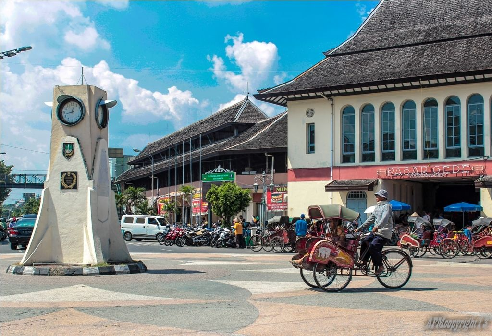
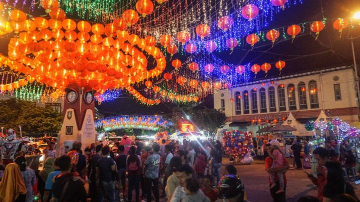
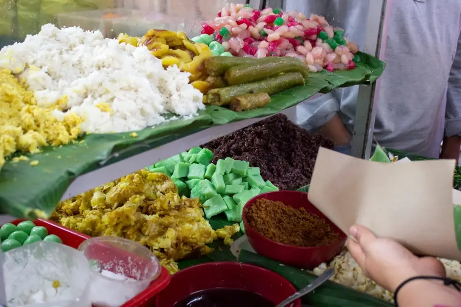
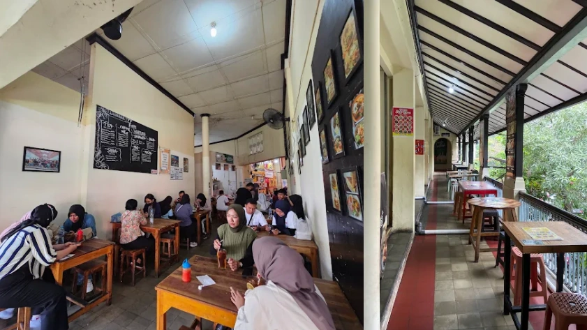
02 — Pasar Bersejarah
"Aroma rempah dan tawa pedagang berpadu di bawah kubah art deco peninggalan Belanda — datanglah sebelum matahari sepenuhnya naik."
Di bawah kubah art deco peninggalan Thomas Karsten (seorang arsitek Belanda yang jatuh cinta pada kota ini) pedagang sudah berderet sejak subuh. Aroma rempah, bau tanah basah dari sayuran segar, dan kepulan uap dari mangkok timlo yang baru selesai dimasak bercampur jadi satu. Ini bukanlah pasar biasa. Ini adalah tempat di mana Solo memulai harinya setiap hari, tanpa gagal, selama ratusan tahun.
Karsten merancang Pasar Gede pada 1930 dengan cara yang tidak biasa. Ia tidak memaksakan gaya Eropa sepenuhnya. Kubah besarnya yang megah berdialog dengan detail-detail tradisional Jawa, seolah bangunan ini mengerti di mana ia berdiri dan untuk siapa ia dibangun.
Jangan lewatkan es dawet telasih di sudut kiri, atau cabuk rambak yang dijual di dekat pintu masuk utama. Dan kalau kamu beruntung datang saat Grebeg Sudiroprajan, kamu akan tahu bahwa Solo adalah kota yang merayakan perbedaan dengan cara yang sangat tenang dan sangat indah.
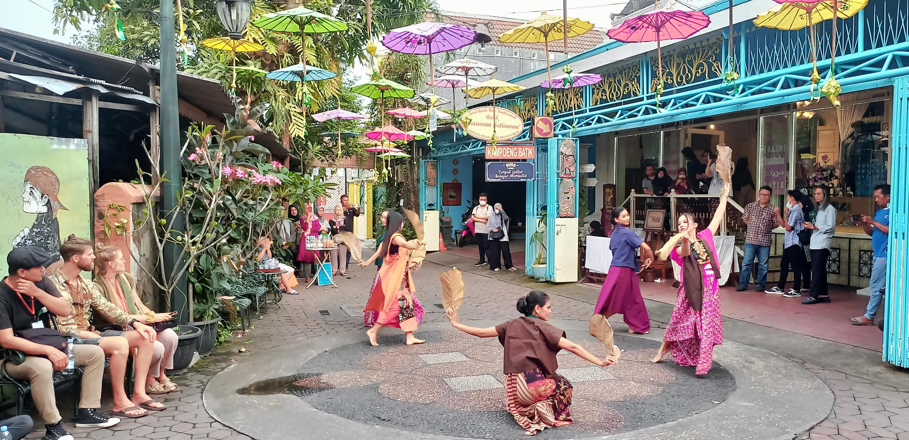
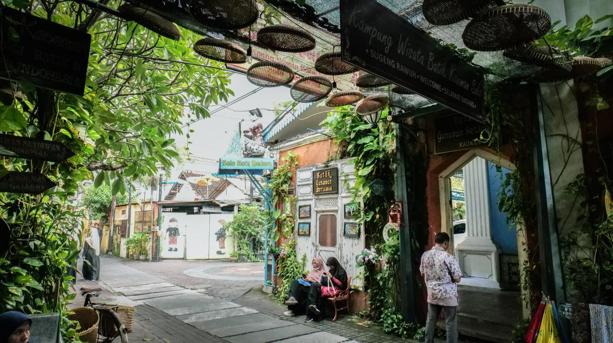
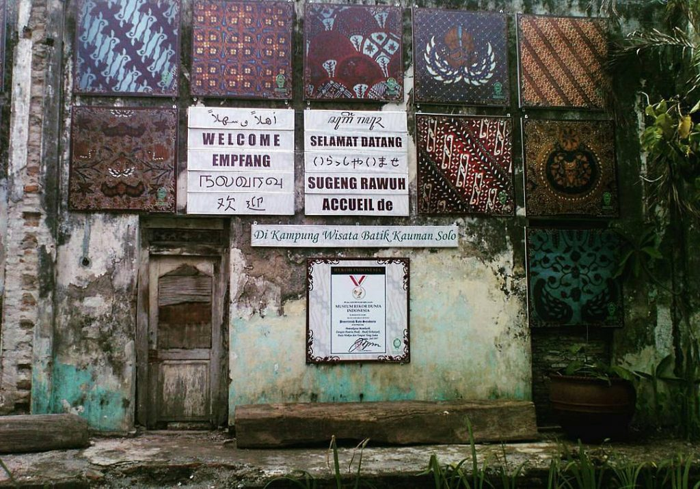
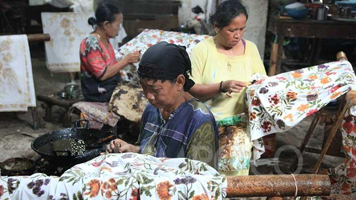
03 — Warisan Budaya
"Di kampung ini, canting diwariskan dari tangan ke tangan sejak berabad-abad — setiap titik lilin yang jatuh di atas kain adalah sebuah doa."
Kampung ini dulunya adalah pemukiman para abdi dalem Keraton Kasunanan. Mereka membatik bukan untuk dijual, tapi sebagai bagian dari kehidupan dan cara mereka menjaga koneksi dengan keraton, dengan tradisi, dengan diri sendiri. Motif-motif yang mereka turunkan dari generasi ke generasi bukan sembarang corak — setiap parang, setiap kawung, setiap semen punya makna yang dulu hanya boleh dikenakan oleh mereka yang punya kedudukan.
Hari ini, lebih dari tiga puluh perajin masih berkarya di sini. Kamu bisa masuk ke rumah-rumah industri mereka bukan sebagai turis yang melihat dari kejauhan, tapi sebagai tamu yang diajak mendekat. Lihat bagaimana canting dipegang, bagaimana lilin panas ditorehkan ke atas kain putih dengan tangan yang sudah hafal setiap gerakan.
Hasilnya tidak akan sempurna. Tapi mungkin itulah poinnya — bahwa batik tulis yang sesungguhnya tidak pernah soal kesempurnaan, tapi soal waktu, kesabaran, dan tangan manusia yang meninggalkan jejaknya di atas kain.
Rencanakan Menginap
Dari butik hotel bergaya heritage hingga penginapan ramah kantong, Solo punya pilihan untuk semua jenis perjalanan.
★ Mewah
Jl. Ahmad Yani, Pabelan
"Keanggunan Jawa modern di tengah kota. Kolam renang, spa, dan ballroom yang kerap menjadi pilihan tamu internasional."
Mulai Rp 850.000 / malam
Lihat detail →◆ Menengah
Jl. Adi Sucipto, Laweyan
"Hotel bintang empat dengan nuansa resort di tengah kota. Taman luas dan fasilitas lengkap — pilihan keluarga yang solid."
Mulai Rp 550.000 / malam
Lihat detail →♦ Butik Heritage
Jl. Srikoyo, Laweyan
"Eco-boutique hotel dengan konsep kampung Jawa. Dekat dengan Kampung Batik Laweyan, cocok untuk wisatawan yang ingin merasakan Solo yang sesungguhnya."
Mulai Rp 480.000 / malam
Lihat detail →◇ Budget Friendly
Jl. Honggowongso, Serengan
"Hostel bersih dan nyaman dengan komunitas traveler yang aktif. Lokasi strategis, mudah akses ke Keraton dan Pasar Gede."
Mulai Rp 120.000 / malam
Lihat detail →◆ Menengah
Jl. Slamet Riyadi, Pusat Kota
"Lokasi paling sentral di Slamet Riyadi — jalan utama Solo yang legendaris. Cocok untuk yang ingin bisa berjalan kaki ke mana-mana."
Mulai Rp 380.000 / malam
Lihat detail →♦ Butik Heritage
Kauman, dekat Keraton
"Rumah Jawa kuno yang direstorasi menjadi penginapan butik. Kamar dengan arsitektur pendopo asli — pengalaman menginap yang tidak akan terlupakan."
Mulai Rp 650.000 / malam
Lihat detail →* Harga perkiraan dan dapat berubah. Selalu cek ketersediaan di platform pemesanan. Jejak Solo tidak berafiliasi dengan hotel manapun.
Suara Wisatawan
"Saya datang pagi-pagi di Mangkunegaran sebelum rombongan lain tiba. Saat itu sedang ada latihan gamelan — suaranya mengalun ke seluruh pendopo. Saya duduk di sana cukup lama, tidak ingin beranjak."
"Pasar Gede mengubah cara saya melihat pasar tradisional. Kubahnya, suasananya, dan aromanya seperti bukan sekadar tempat belanja, tapi sepotong sejarah yang masih hidup setiap hari."
"Di Kampung Kauman saya belajar mencanting untuk pertama kalinya. Tanganku gemetar, hasilnya jauh dari sempurna, tapi perajin di sana tertawa hangat dan bilang begitulah semua orang mulai."
Mulai Perjalananmu
Setiap kunjungan adalah sebuah bab baru dalam cerita panjang kota ini. Kamu cukup datang, Solo akan melakukan sisanya.